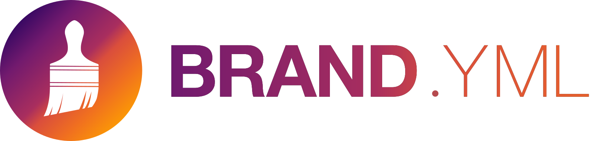

Quarto projects
RaukR 2026 · Day 2 — beyond one file
Learning Outcomes
Yesterday: one .qmd → a branded PDF. Today, the other axis: one file to many. You will be able to:
- structure several
.qmdfiles into one Quarto project with shared configuration (_quarto.yml). - build a navigable, branded website.
- make its builds reproducible, produce a publishable folder, and optionally put it online.
By the end, the same penguins data and yesterday’s report will form a website you can publish.
How today works
Same shape as yesterday: two rounds of watch → your turn, with a break between them. Each round ends with a Challenge in the lab.
A Your turn slide flags each switch to the lab.
Part 1: Build and structure a project
From one file to a whole site.
Why a project?
A project is any folder that contains a _quarto.yml. That file gives you:
- One command for the whole folder:
quarto render, no file argument. - One place for shared YAML, instead of the same header in every file.
- One output folder you can publish.
freeze: a build can reuse stored results (Part 2).
type: selects the features Quarto adds. default is a plain folder of documents. website adds navigation. book treats the pages as one ordered document.
Website or book?
Both build a browsable site. The question is how the pages are read:
type: |
Pick it when |
|---|---|
website |
each page stands on its own. You get navigation, search, and listings. Today’s build. |
book |
the pages read in order, as chapters, and you also want one PDF or EPUB. |
quarto create project scaffolds either one and asks which type you want.
Learn more: Books
Where the project starts
Quarto identifies the project root by searching up from the file being rendered and using the nearest _quarto.yml.
- This is the nearest
_quarto.yml, soday2-projects/is the project root. - Everything under
format:applies to every page in the project. output-dir: where the built site is written. Publish that folder.
Nearest wins. Quarto ignores any _quarto.yml files above the project root.
Directory metadata: _metadata.yml
Yesterday a header set the defaults and a cell overrode them. _metadata.yml applies the same principle to every page in a folder, so you do not repeat the options in each header:
reports/_metadata.yml
The same precedence rule now applies across files: document header > _metadata.yml > _quarto.yml. Set broad defaults, then override them at the document or folder level.
Learn more: Directory metadata
Websites: pages and navigation
type: website makes the folder a site. Define the navigation once in _quarto.yml, and Quarto applies it to every page.
_quarto.yml
Cross-references across a project
Within one page, @fig-, @tbl-, @eq- resolve to a numbered, linked reference, exactly as on Day 1. Section headings work the same way with the @sec- prefix.
Across different website pages, they do not auto-number: a website renders each page on its own, so link between pages with ordinary Markdown links and the navbar/sidebar instead:
Choose book for project-wide numbering
If you need “Figure 3.2” to resolve across chapters, that’s type: book: Quarto renders a book as one unit with global numbering. A website keeps per-page numbering.
Learn more: Cross-references · Book cross-references
One brand → the whole project: _brand.yml
Yesterday _brand.yml sat next to your report. At the project root, Quarto auto-discovers it for every page:
- Every page and every deck inherits it from that one root file, so you never name it in a page.
- Add a page later? Branded on render, nothing to wire up.
- Need an exception?
brand: falseopts a page out.brand: other.ymlpoints it elsewhere.

Learn more: Quarto brand · brand.yml spec
A real project configuration
The site you are reading this on is a Quarto project. It uses the same project: key, with two more entries:
_quarto.yml
render: limits which .qmd files Quarto renders. Without it Quarto renders every .qmd under the root. Prefix a file or directory name with _ to keep it out of the build: Quarto skips those by default. In a render: list, a leading ! removes a match. Put at least one positive include pattern before any exclusions. resources: copies files Quarto does not find on its own (a spreadsheet, a PDF) into _site/.
Your turn
Your turn
Head to the Lab and the Website Challenge: turn a set of .qmd files into a navigable, branded website: _quarto.yml, a navbar, the shared brand, and folder options.
You can now structure files into a branded, navigable website. After the break we make its builds reproducible and prepare it for publication.
Part 2: Scale and publish
Make builds reproducible, then prepare the project for publication.
Freeze: skip unchanged computations
Computations can be slow: you do not want every prose edit to re-run a 20-minute model fit. Two tools are easy to confuse:
cache: the compute engine’s cache, not Quarto’s. It defers to knitr (R) or Jupyter Cache. Per-cell, kept until that cell’s code changes, and it works in a single document.freeze: Quarto’s switch for when a document re-executes. Project-only: rendering one file always runs it. Results live in_freeze/. Once every page has frozen results, CI (the automated build) can rebuild those pages without R.
With freeze: auto, Quarto compares the page’s current source with the source recorded alongside its stored output. If the content is unchanged, Quarto reuses the output. If it changed, Quarto runs the code again. Re-saving an unchanged file does not trigger computation.
freeze is an ordinary option, so a _metadata.yml can set it for a single folder.
The freeze: true workflow
With freeze: true, a project build reuses _freeze/ even when the source changed. You refresh a page when you choose to, by rendering that one file (a single-file render always executes):
With freeze: true, the workflow is: edit a page → render that one file → commit _freeze/. Once every page has been frozen, the project build and CI can reuse those results without R. This is how quarto.org is built.
freeze: auto instead lets the build recompute a page whose source changed. With true, you decide when to recompute each page.
Reproducibility has two parts
freeze pins the results. It doesn’t pin what produced them (the package versions):
freeze→_freeze/: do not repeat slow computation.renv.lock→ “pin the packages, so the team rebuilds the same environment.”
Together: a colleague (or CI) rebuilds the same site, with or without re-running the analysis.
Learn more: renv
One project, several builds
A profile is an overlay on _quarto.yml. The name comes from the file name, so _quarto-internal.yml is the internal profile:
Quarto reads _quarto.yml, then merges the profile on top. List entries are added, so this build is the usual pages plus the drafts.
Learn more: Project profiles
Publishing
Publishing has two steps: render the project, then point a host at output-dir.
_site/is the whole deliverable. Point any static host at it (an internal server, your department’s pages, a hosting service).- Posit Connect Cloud takes it in one command, with a free account and no repository:
The first run opens a browser to sign in, then uploads the site.
quarto publish renders the project first by default. Add --no-render to upload the existing _site/.
Optional: publish your site
Publish your site and open it on your phone. The lab has the steps. If you skip publishing, you still have the complete _site/ folder.
The other providers
Connect Cloud is one provider of several:
The first publish to a provider opens a sign-in. Quarto then records where it went in _publish.yml, which you can commit. gh-pages works differently: it publishes from the current Git repository with your Git credentials. Run quarto publish --help for the full list.
Learn more: Publishing
Your turn
Your turn
Return to the Reproducible Build Challenge in the Lab. Make the build skip unchanged pages, bring yesterday’s report onto the site, then run the guided freeze: true experiment. The result is a publishable _site/ folder. Publishing and the dashboard are optional.
Extending Quarto
Extensions add features that Quarto does not include by default: shortcodes, filters, custom formats, and revealjs plugins.
They install into _extensions/ next to _quarto.yml, so they belong to the project, not to your machine. Commit the folder, as you do _freeze/, so other contributors use the same extensions when they render the project.
Learn more: Quarto extension listing · m.canouil.dev/quarto-extensions (a searchable, community-maintained catalog)
What you can do now
You can now:
- structure
.qmdfiles into a project with_quarto.yml,output-dir, and_metadata.yml. - build a branded website with navigation and explain why cross-page references differ from a book.
- make builds reproducible (
freeze+renv.lock) and produce a publishable_site/for a host or CI. - optionally publish the site to Posit Connect Cloud.
You’ve built the two axes: one document to a branded PDF (Day 1), then one folder to a site ready to publish (Day 2). Yesterday’s report is now a page of that site.
Thank you!
Questions?

Slides + lab: https://cderv.github.io/raukr-2026-quarto/
Learn more: Projects · Websites · Freeze · Publishing · Dashboards · Interactive documents
Christophe Dervieux · GitHub @cderv · cderv@posit.co